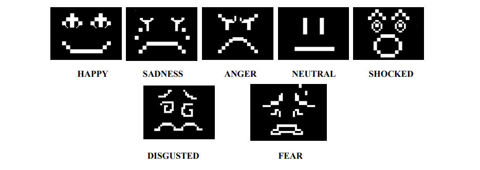
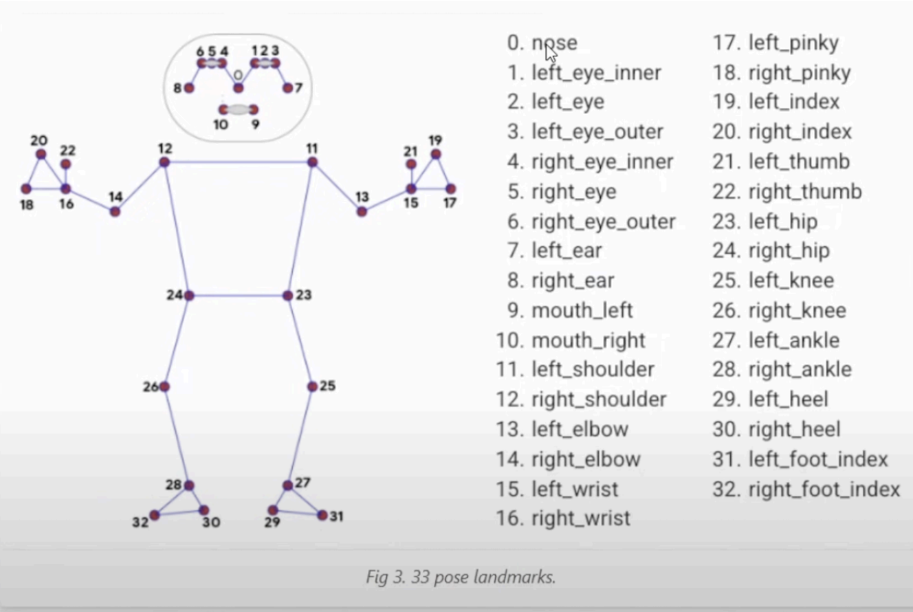
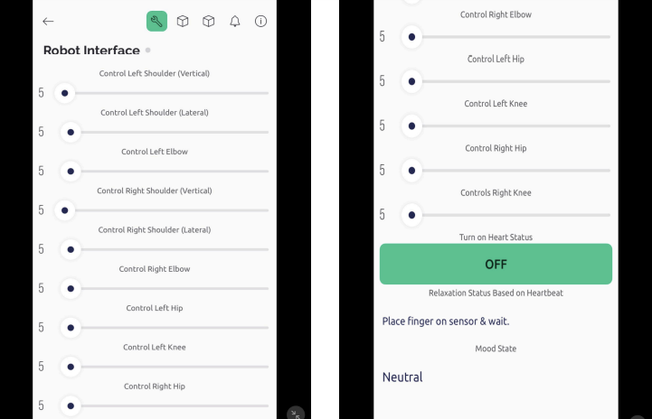
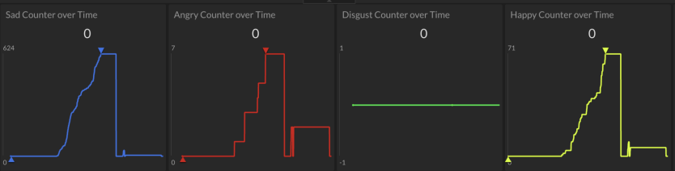
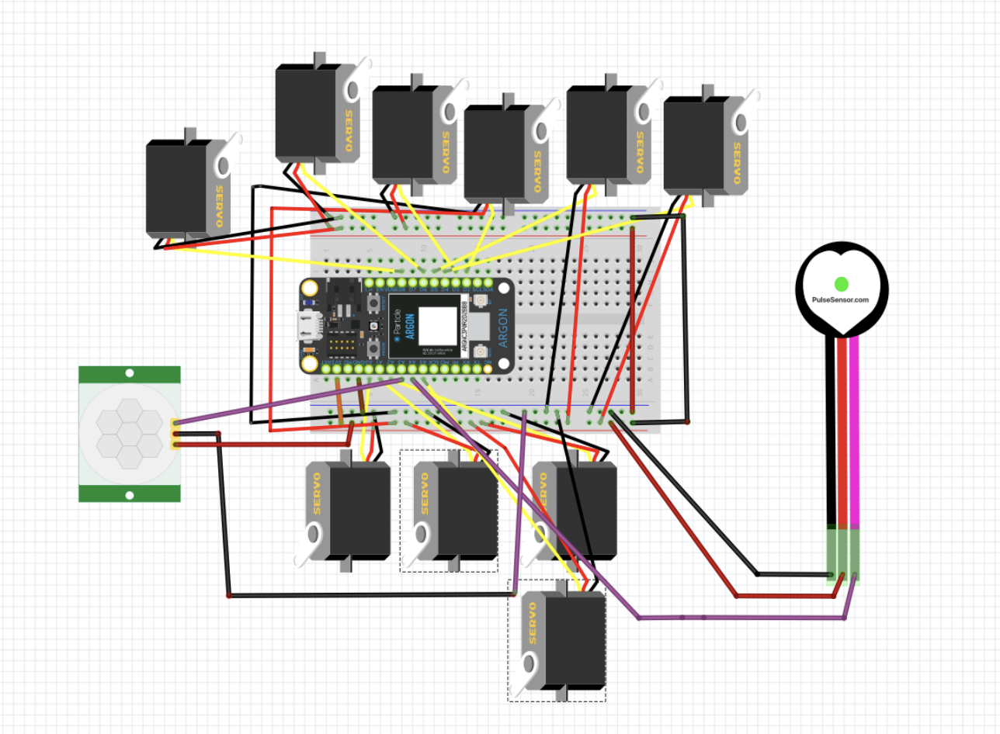

An interactive robot designed for children that mimics human movement, displays facial expressions, monitors interaction data, and encourages physical engagement.
Robot in Action
Technical documentation covering the robot's hardware, software systems, sensing, interaction, and implementation.
Interactive Heart State - BPM Reading
Emotions Displayed on OLED

Body Tracking - MediaPipe Diagram

Blynk Robot Control Interface

Child Mood Over Time

Fritzing Layout

PIR Human Detection